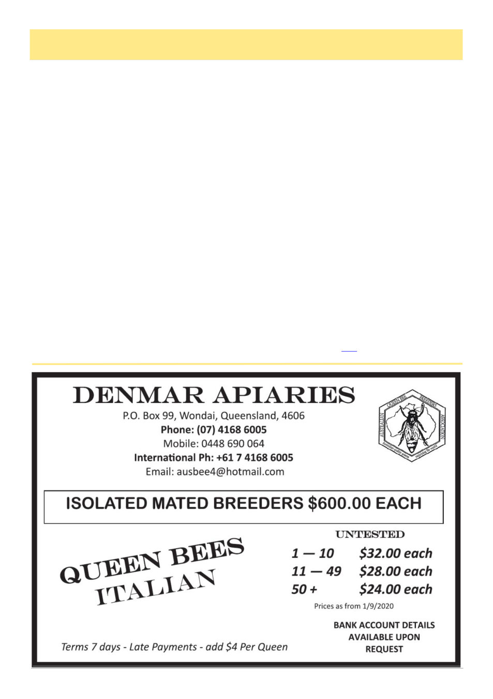

Honeybees Balance Nutrients
July 2026
25
Bees avoid ―too much of a good thing‖ by balancing
nutrients in pollen
UNIVERSITY OF OXFORD
Bees are known for their intelligence, but a new
study led by the University of Oxford has revealed a
previously unknown nutritional skill: they can adjust
how much they eat in response to the balance of essen-
tial amino acids in their food. This helps them avoid
the potential toxic effects of over-consuming certain
amino acids when pollen provides a poor nutritional
match for their needs.
The findings, published in Current Biology, show
that many pollen sources do not provide bees with an
ideal balance of essential amino acids: the protein
building blocks that animals cannot make for them-
selves and must obtain from their diet. The results have
important implications for farmers, landowners, conser-
vationists and gardeners seeking to support healthy pol-
linator populations.
Bees feed almost exclusively on nectar and pollen
from flowers. Nectar provides mainly sugar, while pol-
len is their main source of protein. But unlike nectar,
pollen is not produced primarily as a food reward for
pollinators: it is the male reproductive material of
plants. This means its nutrient balance may not always
match what bees need to grow, survive and reproduce.
To investigate this, the researchers compared the
essential amino acid profiles of honeybee tissues with
that of pollen from 99 UK flowering plant species
across 26 plant families. They then created artificial
diets that either replicated the amino acid profiles of
different pollen sources or honeybee tissues and fed
these to newly emerged worker honeybees in controlled
laboratory experiments.
The researchers found that most pollen sources test-
ed were a poor match for the essential amino acid pro-
file of bee tissues. Bees fed diets that more closely
matched their own tissue composition (rather than pol-
len) ate more, gained more body mass and consumed a
more protein-rich balance of food.
The researchers suspected that this response was
linked to histidine, an essential amino acid that bees
need only in small amounts. To test this, they fed bees
artificial diets where histidine was either high or low
relative to branched-chain amino acids (such as leucine
and isoleucine) that are important for bee growth and
development. When histidine was relatively high, the
bees ate less food overall, including both protein and
carbohydrate.
The team suggests this may reflect a post-digestive
feedback mechanism that helps bees avoid the potential
toxic effects of over-consuming particular amino acids,
rather than simply eating more pollen to make up for
nutritional shortfalls...
However, honeybees appear to have developed a
strategy to ensure their developing young obtain a bal-
anced diet ...
Read the full article here